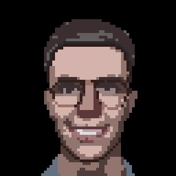

TELESIMOD
22/03/2020 11:58:49

Ciao, sono Simone Candido, ingegnere informatico al Politecnico di Torino. Sto seguendo un Double Degree MSc tra PoliTo (Computer Engineering) ed EURECOM (IoT & Wireless Communications, Sophia Antipolis), con specializzazione su 5G/6G. Ho conseguito la triennale in Ingegneria Informatica con 108/110. Sono appassionato di IoT, sviluppo full-stack, reti wireless e sistemi embedded.
Visita il nuovo portfolio completo 107